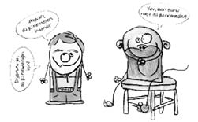
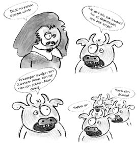

Kim, ne demiş?
• Hekimlerin yaptığı en büyük hata ruhu düşünmeden yalnız bedeni tedaviye teşebbüs etmeleridir.
Eflatun
• Eğer göz bir hayvan olsaydı, görme onun ruhu olurdu.
Aristoteles
• Göz bir hassedir ki, ruh bu âlemi o pencere ile seyreder.
Bediüzzaman
• Kötülük, akılda yer etmiş, inatçı ve ancak mucize ile iyileşebilen bir ruh hastalığıdır.
Novalis
• Bilincimiz ruhun sadece yüzeyi ki, yerkürenin sadece yüzeyini bildiğimiz gibi onun da içini değil, sadece kabuğunu biliyoruz.
Schopenhauer
• Delilik, aynı şeyi tekrar tekrar yapıp farklı sonuçlar beklemektir.
Einstein
• Akıllılığa doydum, ben artık deliliğe aşığım.
Mevlânâ
• Beyin, ruhun ürettiği programları uygulamak, bedenin diğer parçalarına iletmek üzere kurulmuş bir santrale benzer.
Ömer Sevinçgül
• Kendisinin iyi ve sıhhatte olduğuna inanan bir hastayı tedavi etmek mümkün değildir.
Amiel
• Mutlu olmak istiyorsak, hayatın cisimde değil, ruhta olduğuna inanmalıyız.
Tolstoy
• Bizi şartlardan çok, ruh yapımız mutlu kılar.
Voltaire
• Gören, duyan yalnız ruhtur; geri kalan her şey sessiz ve sağırdır.
Epicharm
• Kötü arkadaşın verdiği zarar vücuduna değil, ruhunadır.
Leitner
• Düşünce ve kararlarımız doğrudan doğruya ruh halimize bağlıdır.
Alexis Carrel
• Ruhun büyüklüğü enginliğiyle değil, inançlarındaki kesinlik ve gerçeklikle ölçülür.
Epiktetos
• Istırap çekmemiş bir ruh, saadetten ne anlar?
George Sand
• İyi şeyler için sevinmek, kötülükler için acı duymak, dengeli bir ruhun özelliğidir.
Cicero
• Önemli olan ruhtur. Güzel bir çehrede güzel bir ruh yoksa neye yarar.
Euripides
• Her ruh, yeniden düzenleme ihtiyacı duyan bir melodidir.
Stephane Mallarme
• İnsanın ruh sağlığı için gerekli çevrenin, karnını doyurabileceği ürünü yetiştirmek için gerekli tarladan çok daha geniş olması zorunludur.
Conrad Lorenz
• Dünyada işlenmesi güç üç şey vardır: Elmas, çelik ve insan ruhu.
Benjamin Franklin
• Basit bir ruh mutluluk ile övünür, felaketle de yere serilir.
Epikuros
• Ruhu öldürmek, cismi öldürmekten daha büyük bir cinayettir.
Gerhart Hauptmann
• Bir baba çocuğuna burnunu, gözlerini hatta aklını miras bırakabilir, ama ruhunu veremez; ruh her insanda yenidir.
Hermann Hesse
• Dünyada en gelişmiş ülke, insan ruhudur. En verimli ülke de odur. Bu sebeple eğitimin en kutsal görevi, ruhları geliştirip kemale ulaştırmak olmalıdır.
Pearl S. Buck
• Ten, ruhun elbisesine benzer. Bu el de ruhun elinin yeridir, bu ayak da ruhun ayağına giydiği mesttir.
Mevlânâ
• Şahsiyetini kazan, faziletlerini kemale eriştir. Zira sen, cisminle değil ruhunla insansın.
Gazali
• Büyük bir ruhta her şey büyüktür.
Blaise Pascal
• İnsan, ruhunda açılan yaradan da ölür.
Balzac
• Kâinatın efendisi ruhtur.
A. Hamdi Tanpınar
• Büyük ruhlar, ıstıraplarına sessizce katlanırlar.
Schiller
• Vücudu öldürenden korkmayınız. Ruhu öldürenden korkunuz.
Diderot
• Başkalarının ruhu karanlık bir ormana benzer.
Turgenyev
• Vücut, ruhun bineğidir.
Şeyp Galip
• Kılıcın kını kemirdiği gibi, ruh da göğsü yıpratır.
Lord Byron
• Ruhunu geniş tutmasını erken öğrenebilmiş kişi, sonraları dünyayı içine sığdırabilir.
Stefan Zweig
• Başkalarının hataları ve fenalıkları ile uğraşarak ruhunu karartma. Islah edilmesi gereken yegâne insan kendinsin.
R. Waldo Emerson
• Dünya nimetleri insanı ruha ait zenginliklerden uzaklaştırır.
Mikszath
• Büyük ihtiraslar büyük ruhlar içindir.
Oscar Wilde
• İnsan ruhunun selameti için en koruyu ilaç, bir dostun, gördüğü kusuru sadakatle inkâr etmesidir.
Bacon
• Para açlığı giderir, mutsuzluğu değil. Yemek mideyi doyurur, ruhu değil.
Bernard Shaw
• Müzik, ruhu günlük hayatın tozlarından siler.
B. Auverbach
• Kitap, ruhun ilacıdır.
Japon Atasözü
• Dünya üzerinde en güçlü silah ateşlenmemiş insan ruhudur.
Marahall Foch
• Kıskançlık ruhun bir hastalığıdır.
John Dryden
• İnsanoğlunu ihtiyarlatan geride bıraktığı yılların çokluğu değil, ideal yokluğudur. Yıllar cildi buruşturur fakat idealsizlik ruhu öldürür.
General Mc Arthur
• Doğruluğun en güzel meyvesi ruh sükûnudur.
Epikuros
• Günah, ruhla beden, toplumla kişi arasındaki bağları zayıflatır, insanın Tanrı’ya olan bağlılığını sarsar.
Alexis Carrel
• Ruhumun derinlerinde bazen neşeli, bazen de üzüntülü şarkılar duyarım. İşte beni hayata bağlayan bu şarkılardır.
Bergson
• Ruhun güzelliği, bedenin güzelliği kadar kolaylıkla görülmez.
Aristoteles
• Gözlerde yaş yoksa ruh gökkuşağına sahip olamaz.
Kızılderili Atasözü
• Hava için gök gürültüsü neyse, insanın ruhu için hayal kırıklığı da odur.
Schiller
• Hayal gücü, ruhun gözüdür.
Joubert
• Gözyaşları, insan ruhuna yağan yaz yağmurlarıdır.
Alfred Austin
• Kapalı gözler, ruhu seyretmenin en güzel şeklidir.
Victor Hugo
• Bütün mesele, ruhları görebilecek gözler edinmektir.
Lord Byron
• Bir mermer parçası için heykeltraş ne ise, ruh için de eğitim odur.
Addison
• Gençliğin ruhunu, işleyen bir tarla gibi, kendi haline bırakırsanız orada ısırgandan ve dikenden başka bir şey bulamazsınız.
Snellman
• Dedikodu basit ruhlu insanların eğlencesidir.
Corneille
• Ruhumuzu teselli eden tek şey ilimdir.
James Dorsey
• Yüklendiğiniz vazife ne kadar zahmetli olursa, ruhumuzu o nispette eğitir ve yükseltir.
Andre Gide
• Vicdansız bilim ruhun çöküntüsüdür.
Rabelais
• Başarı ruh halinizle bağlantılıdır. Başarılı olmak istiyorsanız, kendinizi başarılı biri olarak görmeye başlayın.
Dr. Joyce Brothers
• İnsanların bedeni ve ruhu bir bütündür. Biri acı çekerse, diğeri onu paylaşır.
Chasterfield
• Başkalarının iyi tarafını bulup takdir etme alışkanlığı, insanın ruhunu zenginleştirir.
C. W. Hall
• Berrak bir gölden kirli su akmaz, güzel bir ruhtan kötü söz çıkmaz.
Endonezya Atasözü

• Pek çok insan sırf kafaları olmadığı için kafayı bozmuyor.
Schopenhauer
• Bedenimizde görülen bazı hastalıklar, ruhlarımızda saklanan hastalıkların küçük parçalarıdır.
Nathaniel Hawthorne
• Ar etmek insan ruhunda asıldır. İnsanı insan olarak muhafaza eden de budur.
Nasır-ı Husrev
• Çizgiler, yüreklerimizde değil, yalnız alınlarımızda belirir. Çünkü insanın ruhu hiçbir zaman yaşlanmaz.
James A.Garfield
• Kusursuz yaşa! Çünkü bunalım içinde yaşayanların ruhları ve bedenleri küçülür.
Zordaster
• En faziletli insan, ruhen yükselmeye çalışan, en mutlu insan da yükseldiğini hissedendir.
Sokrates
• Ailenin bozulması, modern hayatın psikolojik ve maddi şartları huzursuz bir neslin yetişmesine sebep oluyor. İnsanlar çocuğa huzursuzluk ve bir bela gibi bakıyor. İşte Batı kendini böyle bitiriyor.
Alexis Carrel
• Ruhunu kaybeden, dünyayı kazansa ne çıkar?
Victor Hugo
• Bedenime sahip olabilirsin, ama ruhuma asla!
Hülya Koçyiğit

Milletlerin psikolojisi
Çeşitli ülke halklarına filler konusundaki yaklaşımları sorulmuş ve ortaya milletlerin psikolojisini yansıtan şöyle enteresan bir tablo çıkmış.
Fransızlar: Fillerde cinsel yaşam
Çinliler: Fil pişirmenin yüz farklı yolu
Etiyopyalılar: Bir fille bin kişi nasıl doyar?
İngilizler: Safaride fil avlama teknikleri
Almanlar: Fillerin Alman dil ve kültürüne etkileri
İranlılar: Fillere nasıl şiir okutulur?
Amerikalılar: Daha büyük ve görkemli fil nasıl yetiştirilir?
Japonlar: Daha küçük ve daha ucuz fil nasıl yetiştirilir?
İsrailliler: Filler en pahalı ve en kârlı nasıl satılır?
Brezilyalılar: Fillerle karnavalda samba yapma metotları
Türkler: Ne olacak bu fillerin hali?